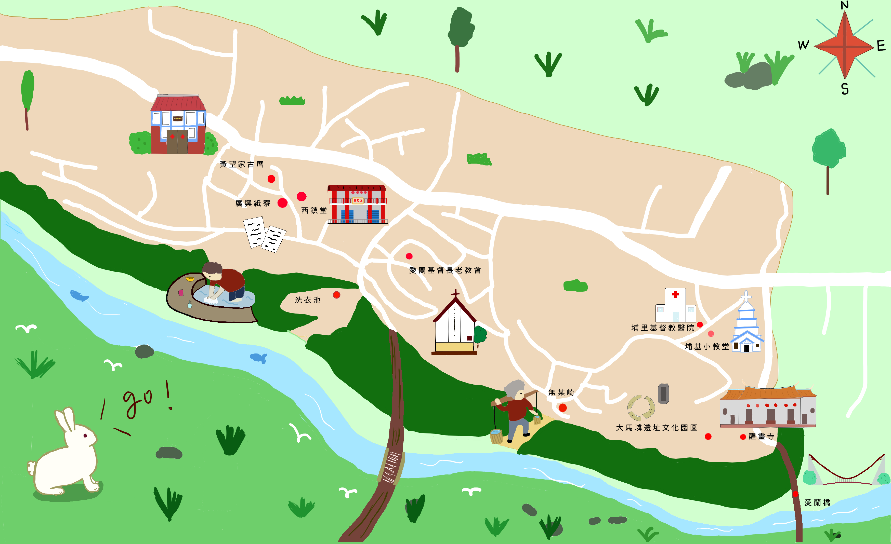
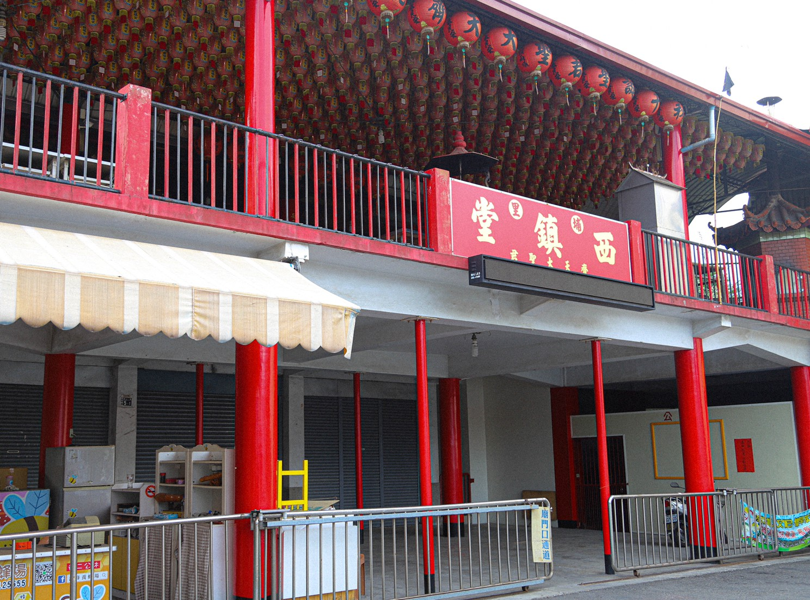
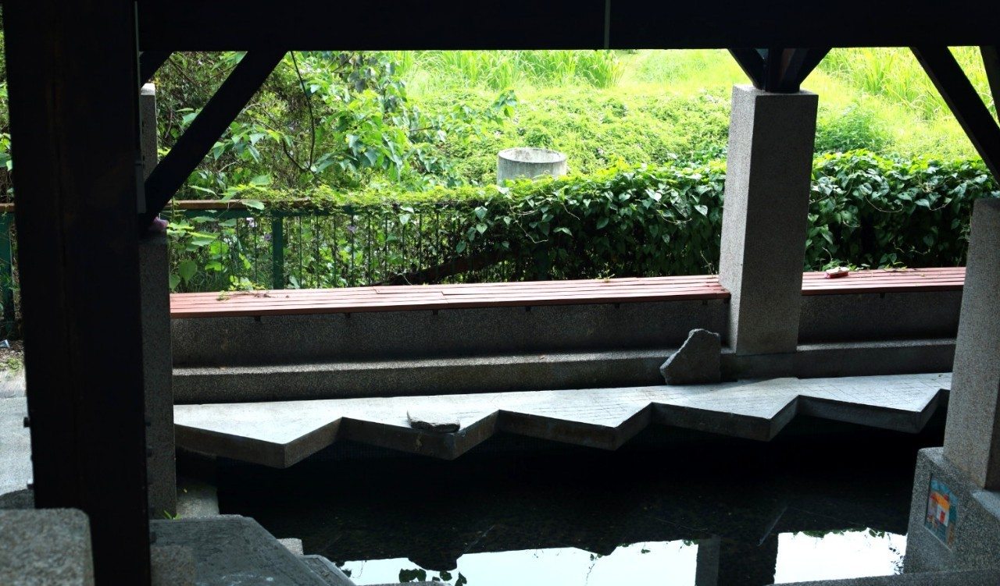
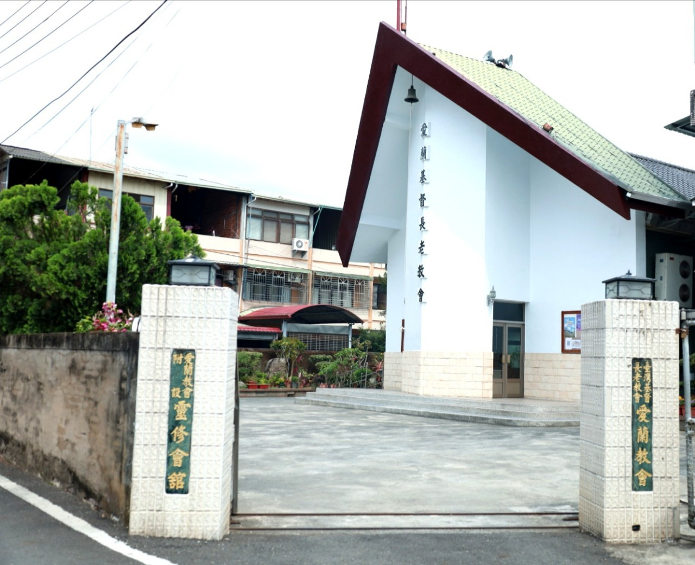
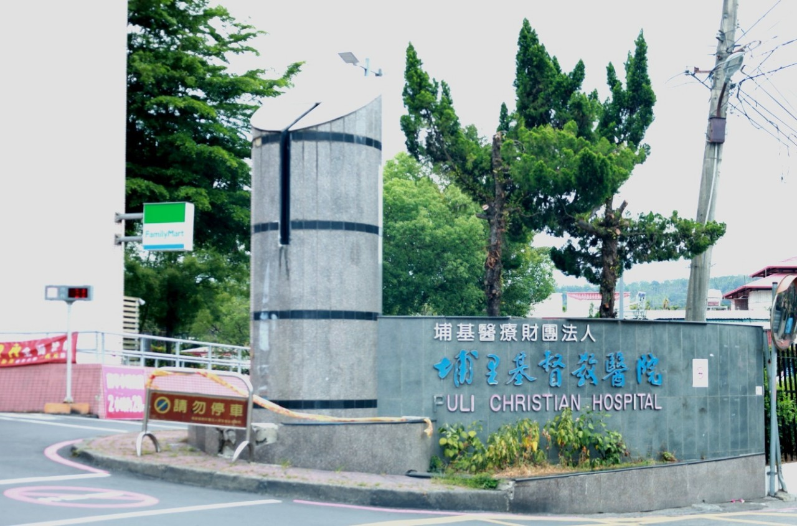

家裡是土角厝，正身護龍，圍牆都有圍起來這樣。有一回，埔里國中教書結束了，要去做體操，那一天早上我跟姪子很早就起床了，三點多就起來了，好像看到有一個人，戴著一頂帽子、黑黑的，在牆邊。我跟姪女看到之後感到很害怕，就趕快跑走，跑到一段路後往家裡看，看到一個人，腳沒有踩地，身高沒有兩尺高，看見後還是趕快跑遠遠的。那是我親眼看到的，那個是什麼我也不知道。

出生於埔里愛蘭台地的黃耀東先生，在35歲那年有鑑於當時埔里紙業的蓬勃發展，以及愛蘭台地水質良好的造紙條件下，於民國54年創立「廣興製紙加工所」，投入埔里手工造紙業的行列，草創初期是一間規模不大的加工所，雖然是以代工為主，但黃老先生同時也致力於手工紙的研發改良以提高品質。

朱彩雲女士54年嫁來這一庄，那時候西鎮堂很興旺，興到人家請去辦事，都會請到家裡做。我婆婆不時人不舒服、不順啦，傍晚就把大聖君的乩童請到我家，在那裡辦事，請教所有疑難雜症，都會覺得有解決。庄仔底有一位歐巴桑，本來人好好的，突然有一天來渾身不舒服，胡言亂語，大聖君降駕時一直跳，跳到他們家去，從箱子拿出劍，以前乩童都拿寶劍，指著某東西說：「從這個地方打開，裡面一定有東西」打開箱子真的有發現一張符仔，你看大聖君有靈驗，原來是被放符啦，所以精神差，大聖君做完後，拿掉符仔，還替她解決，她就恢復原來的樣子了。

我們鐵山有一個水源，是製造紹興酒的，我們村裡的婦女喔，都去那個水源，用石頭堆疊起一個水池，大家都在那裡洗衣服，聊八卦，消息的轉運站，地方有什麼消息，在那裡就可以知道了。那個水源很好，在下面那裡，前面會湧泉。以前我們婦女都去那邊洗衣服。

位於埔里愛蘭台地上的愛蘭教會是一間以巴宰族人為主體的教會，1865年英國基督長老教會透過醫療宣教將福音傳入台灣，平埔族成為最早接受基督教信仰的族群，本論文即以巴宰族群為例，從歷史變遷角度探討埔里愛蘭教會的設立其發展過程。

以前以前我們這裡的男生都娶不到老婆，因為別人探聽到嫁來愛蘭的人都需要挑水，因為需要挑水，所以很多女生聽到之後都不敢嫁過來在這裡。
守城有一間孤兒院，那時候孤兒院有一大堆孩子，後來沒有續租，就搬來崎頂。孤兒院旁有一間瑪麗亞產院，有聽過嗎？專收山地婦女待產，吃飯不用錢住不用錢，生小孩嘛不用錢，生完小孩要回去，還合贈送一包禮物，裡面都是衣服啦之類的，嬰兒和大人的衣服都有。
埔里基督教醫院的小教堂，五十多年前，以一千塊美金費用建築而成，採用挪威建築方式，以鋼索固定梁柱，921大地震沒有震毀，是埔基人的精神寄託。 使埔基人以喜樂的心來為民服務，透過愛心與關懷，帶來健康喜樂，用愛送醫療上山，展開巡迴醫療網，擴張真愛的境界，推動服侍善工，藉著醫療，保健，社會服務使民眾得以安身，安親，安養。
以前有一地理仙來到埔里在講，你們船山喔，就是少了一根煙囪，沒有煙囪船就法行駛；如果有了煙囪，船就能行駛，船若行駛，在船上的人們就能生活得很好。我記得我11歲時，跟我老爸去「掃龍仔」，前溪底都有很多水堀仔，我、老爸和姑丈、他爸啦，一次需要5-6人，「掃龍仔」需要用很大型的麻袋，6個人各站在網的前中後兩側圍起來，另2個人負責去窟仔尾趕魚，讓魚兒跑進去網袋裡，一次可以到很多魚。
醒靈寺以前有水車，在國泰和台棉中間，水要有水流，才能將水帶動上來，旁邊有一顆幫浦在上下運作，將水打到醒靈寺上方，以前我們都在那裡挑水，如果沒有那個，就要到溪底挑水。
烏牛欄吊橋在很早很早期的時候，就是晃橋，人多一點或是車子經過，橋就會搖搖晃晃的。以前大家的生活比較欠缺，外面進來埔里要補貨的，像是魚貨的鹹魚啦、雜貨啦等等，都必須要經過吊橋運輸，進來埔里。吊橋在晃，我們這些人去後面推東西下來，偷搬貨物。
其他更多的故事都在裏頭喲!!!!